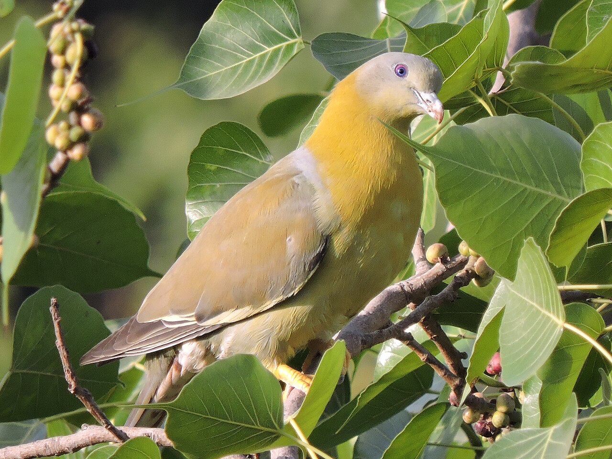
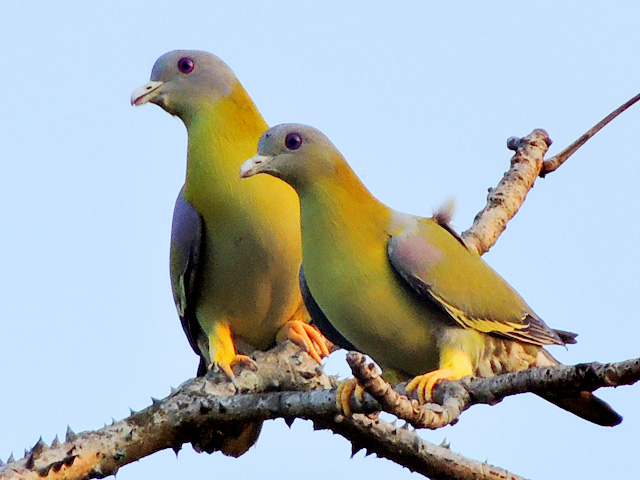

The Yellow-footed Green Pigeon is a plump, fruit-loving bird found across the Indian subcontinent. Its soft cooing and vibrant green plumage make it a peaceful forest dweller.

This pigeon prefers wooded areas, groves, and gardens. It feeds mainly on fruits, especially figs, moves in small flocks, and nests in trees with a flimsy platform of twigs.
Read more about this bird and its wonderous characteristics on portals like E-Bird.